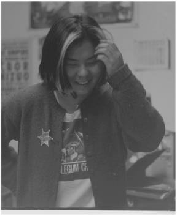

|
 |
"God bless look at us...We're a crazy bunch of slobs." |
|
I'm a full time student. I'm a sophomore. I'm a literature and cultural studies
major. I hang out. I like to go to movies. I like to go to shows. I have a regular playlist
show.
First semester my freshman year I entered training, and then I applied for the board
second semester I was at school, and now it's just snowballed into this...I knew it was
something I wanted to do with my college experience, was work at the radio station. It
sounded like it was a lot of fun and music had become, like through high school, like a
broader focus of things that I was interested in...I wanted to learn more about music as
a whole, you know ? I think the radio station is probably one of the easiest and least
expensive ways to do that...I feel lucky that a school like duke is in an area like Chapel
Hill music wise. Good shows are always going on. You can drop by your local coffee
shop and see your local rock stars working there. I started working at Merge [Records]
before I started college so that also pretty much made me want to be in radio.
My first show was spring of 1995, 2-5 am Wednesday mornings...I really liked it actually. Towards the end of the semester I was so punchy...stalkers would call in tthe middle of the night and that was pretty funny. They'd be like, "Can I come pick you up and walk you home?" and I’d be like "No dude.My boyfriend's coming and he's on the football team," which was a complete and total lie...I think early morning shows are good for people to have and they don't realize it until they have it. Cause it’s sort of comforting knowing that you don't have all that pressure on you. I wanted to meet people, you know. I was a freshman and I think when I came to Duke I was like "I hate it here. Everyone here sucks." First day of freshman year, during orientation, that was the first year of an all-freshman east. And the first night I was there I was hot and sweaty and I had these horrible red strips in my hair and everyone was staring at me and there were all these crazy frat boys with, like, literally, these little black books and they would just run from dorm to dorm to dorm, walk up and down the halls and see ladies, like freshman girls, and take down their phone numbers! and like that's horrible! I was like, "Everybody at school's like this and I am totally not like this and I don’t understand how I’m ever going to get along with people." And so I was like, "I’m not going to meet anybody, everyone here sucks my ass, you know?" So that was probably another reason why I was like I’ll probably work at the radio station. I’m sure people there I’m more likely to get along with than your average duke student. I think, that when you're a DJ, especially an early morning slot, and you don't really get involved with the station and you don't really get to know many people, the whole thing is sort of intimidating. Like the board is sort of an intimidating body. I think I started hanging out with station people fall of this year...I find that everyone there, especially the students there, and especially the female students there, are a lot like me. We're all motivated. We're all highly motivated. We all have this idea, we all..or a lot of us, don't adhere to this whole - the thing that bothers me about Duke girls is that they’re so smart, you know? The women here are really really smart and so many of them are...stupid. But the thing is, is that they're not really that stupid, they just act that stupid...I think that girls are brought up, well, I wasn't...in traditional homes to think that if you're smart it's something that you sort of have to hide to get guys...and that just bothers me - like, I find that completely unnecessary. I find that a lot of the girls at the station are not like that. I can see myself having a lot in common with he people at the station, more than the average person in my class. There are things about the way that training is run, and the way that mentorship is run and the way that things are basically done at XYC that I admire and I’d like to emulate, except the fact that, the straight fact is that we don't really have the student interest base that we need to become an XYC. But I don’t really want to be an XYC, I just want to implement some of the things they've done. In my opinion, we're not anything like them at all. I don't think we're trying to be like them, I don’t think we're anywhere close to being like them, I just think we have completely different agendas. I think there are a devoted number of people that listen to jazz from 5-8 every weekday. I think there are a devoted number of people who listen to blues on the weekend....people listen to Ross's show, people listen to Steve Gardner's show, people listened to king Ayoola's show, people listen to Dave Tilly's show. And those are all genres of music that aren't rock genres that there is an audience for in the area, and those are music genres that don't get much air play on commercial radio. I think it’s good, I think it diversifies and broadens our listening audience. I don’t think that XDU's purpose is to satisfy a certain type of audience. I think that XDU's purpose is to broaden the listening perspective of the average listener. But then again, I feel like, I mean, you have to want to be broadened, you know? |
I think it's sort of the same purpose, as, like Freewater. What if people don't want to see
independent films? I’m sure [they] occasionally get input from students being like,
"Why don't you show this? How come you just show a bunch of shitty independent
movies? How come you show stuff that’s not like Independence Day?" You know? I
think we're also there for the Durham community. And I think that XDU's probably
one of Duke's selling points for community interaction. But I think that students enjoy
us. It's not like no students listen. I know a lot of students who listen, but I’m just
saying a majority of Duke students don't listen. I think that XDU brings, not just
listenership, but I think that XDU in the Durham community is, probably not a vital
part, but it's probably a much appreciated part. Just because Durham, unlike Chapel
Hill isn't like this weird sort of surrealist type town, where the only people living there
are students, you know?...Chapel Hill is just...the largest legal problem they have there
now is open alcohol containers. You know, think about that? That's not a real city.
We're Durham. We're a real city. I think that Durham has a very stable, steady adult
population, you know? I mean they're here, they work here, they live here. I think that
a lot of them listen to XDU. I think a lot of them appreciate XDU. And I think that
adults that want to do something else in their free time, know that they can be a DJ at
XDU. And it think that's good.
I’d like to think that the communication in the station is much better than it used to be between the administration and the DJs and even between the DJ themselves. I think everyone's a lot more cooperative. People have a sense of responsibility due to that communication instilled in them. I think that people feel more comfortable at the station. I feel like people feel like they can come up and talk to me about things that are concerning them. And that's a major factor, a major difference and that's a difference for the better that's been going on since I’ve been here. I think that XDU, for a college station, I think something that's unique about it, is it doesn't matter who you are, if you want to do a show you can potentially do a show. I think that's really important. I mean, if you suck, you're not going to do a show, but you know what I mean. You definitely have a chance to become a DJ, should you want to be a DJ. Oh, something else unique. I think we're one of the only college radio stations, especially in this area, that the administrative staff is predominantly women. XYC is a huge boys club...People are like "Oh, XDU. That's the women's station." It's not surprising to me, but it's surprising to other people when they hear about it. I don't know. I think that in the environment, it's so natural for me to come in and see an office full of women. To run things, to know that I’m in a group of women that's on an administrative team, that I don't even think about the alternative, you know? I think that maybe those women at Duke are just very very strong and very very motivated, you know, and have an agenda and don't think twice about going out to get it. God bless look at us...We're a crazy bunch of slobs. When people ask me, "Why are you here? Why do you devote so much time to the station?," I’m like "Free tickets to shows." What does college radio mean to me? I think probably the most important thing is not having the constraints of commercial radio placed on you. I think that college radio experiences a freedom that commercial radio can't afford to. We don't have the commercials, we don't have to adhere to any sets of rules, any certain audience type, we don’t have to worry about our advertisers. We don't have to deal with, like any number of things that commercial radio has to deal with. I think that gives us the room to be broad, and to be imaginative, and to be innovative. We're not stuck in a genre like commercial radio. I think that what I like about the station is that you can have any level of commitment that you want to it. You can split a shift and come in 2 hours every other week. Or you can have a weekly show. Or you can do what I do - live there. Whatever you want to do, everything's okay. And everything's accepted and endorsed. It's my life, I’m there all the time. I can't even take on objective stance to it. It's so all dominating, it's pervasive. The station is something that you can completely immerse yourself in. And I think that I’ve completely immersed myself in it. Just cause there's always tons of stuff to do there. There’s always someone to call and yell at. There's always grids to make and hound people into turning in. Yeah. I love it. I go through phases of loving it. Sometimes it gets to be a pain. I don’t know. I think it's a really good environment to be in. You get to meet cool older people and cool younger people...I’ve met people and the station's opened other avenues to me. Now I can show up most anywhere and know someone. And you become a townie. And then people start to recognize you and it's a bunch of fun. I like being a townie. Being a townie in Durham is a cool thing to be. |